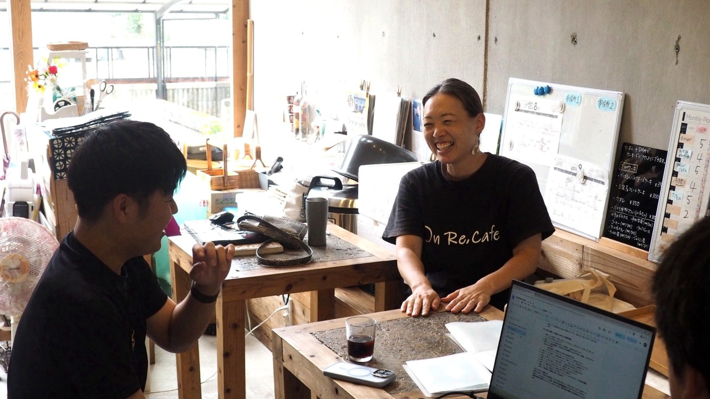
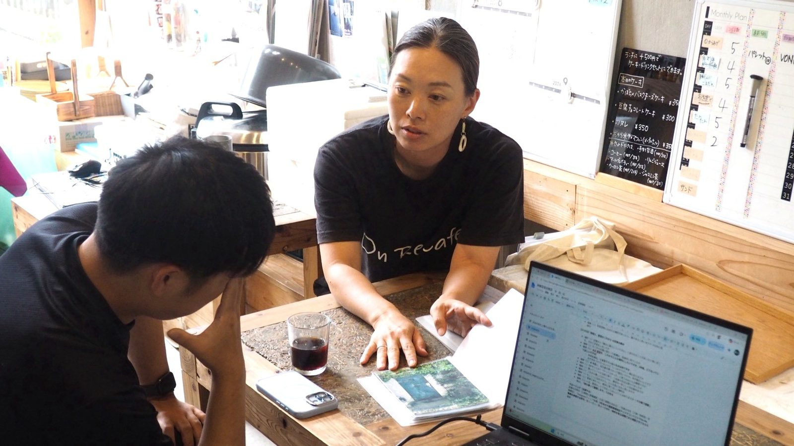
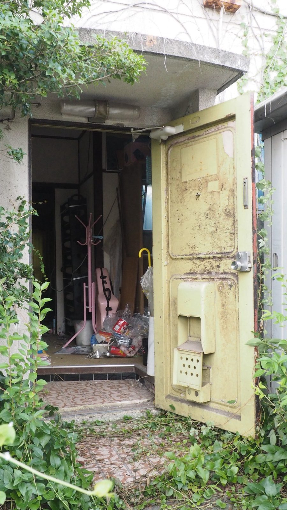
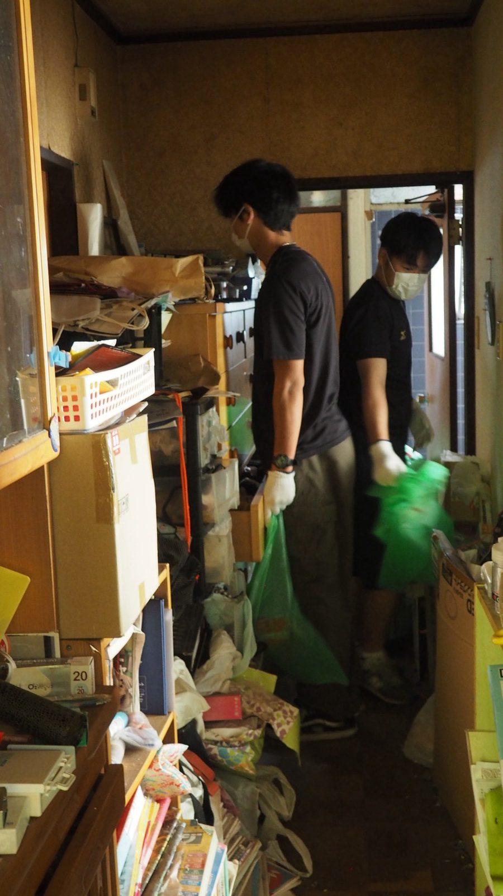
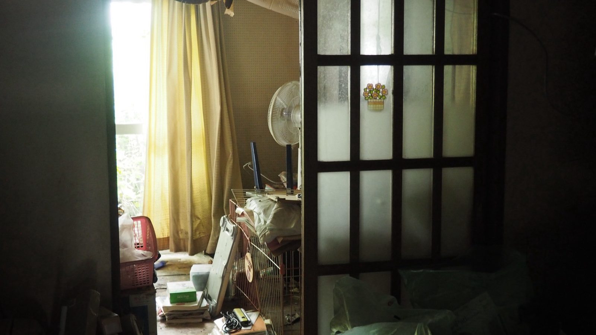

トップ写真：この夏に手に入れたばかりの「四軒目」。玄関は蔦に覆われていた
千葉県市原市、若宮団地。JR内房線・八幡宿駅から歩ける場所にある住宅団地だ。
ここに、築五十年を超えるテラスハウスが、いまも横に連なって建っている。鉄筋コンクリートの二階建てで、一住戸ずつに玄関がある。団地全体では、二千世帯を超える大きな団地だ。
その一角に、大きなガラス窓のカフェがある。
もとは、相続のあと空き家になり、十年間、誰も住んでいなかった家だった。
新築マンションを売る仕事から、団地を調べる仕事へ
小野千景さん。市原市の出身。
大学を出て大手建設会社に入り、約十七年勤めた。新築マンションを販売する仕事から始まり、最後に携わっていたのは、築年数の経った住宅団地を調査する仕事だった。
結婚を機に、地元の市原へ戻ってきた。暮らし始めたのは、若宮地区。二〇一四年のことだ。
勤め先は都内、暮らしは市原。出産、子育てをしながら、団地を調べる仕事を続けていた。
団地の中を歩いていると、空き家が目に入ってくる。
在職中に知り合った市原の建築家・黒澤さんと、いろいろ話すうちに、気持ちが固まっていった。
子育てをしながらの会社員生活に、迷いのあった時期だった。空き家活用の話になったとき、「出来るかも……。やってみよう」と、勢いのまま飛び込んだ。
最初は、「自分でどうにかしなきゃいけないっていう、勝手な使命感に駆られて」
二児の母で、会社員。そのうえで会社を辞め、二〇二二年、On Re. Project を立ち上げた。
団地を調べていた人が、団地の空き家を活用する人になった。
はじめてみると、「団地再生」なんておこがましかった、と彼女は言う。自分にできることなんて、ない。
だから、視点を変えた。
環境を変えてみると、忙しさは変わらないのに、気持ちには前より余裕が生まれたという。
On Re. Project の「On Re.」には、Ono が Renovation する、という意味がこめられている。Only——唯一無二、という意味は、あとから加わった。

この家は、壊せない
若宮団地の家には、少し変わった事情がある。
一戸建てとテラスハウスでできた住宅地で、テラスハウスは鉄筋コンクリートの連棟だ。家が横につながっていて、全体でひとつの構造体になっている。
木造の一戸建てのように、簡単には壊せない。真ん中の一戸だけを壊すことは、そもそもできない。端の一戸を壊そうとしても、全戸の同意がいる。隣の壁の補強も必要になり、構造的には本来できないはずだという。
壊して建て替える、という普通の選択肢がない。
だから、空き家は空き家のまま残り続ける。
けれど、彼女の見方は逆だった。
しっかりした住宅団地で、インフラもひととおり整っている。それなのに、どこか廃れて見える。
ちょっと変えれば復活できるかもしれない。そういうポテンシャルが、この団地や地域にある — 小野千景さん
壊せない家は、使うしかない。使えば、生き返る。
最初の一軒は、住民の方に喜んでもらえるものをつくりたくて、カフェ（店舗兼用住宅）にした。
床と天井を抜いたうえで構造の計算をしてもらい、補強してから改修した。抜いたのは、二階の床と天井。そこが吹き抜けになり、上から光が落ちてくる。外から見ると、屋根にちょこんとした出っ張りがある。
壁は打ちっぱなしのコンクリート。テーブルや椅子、デッキの木材は、台風十九号の被害を受けて倉庫に置かれたままだったもの。家を壊したときに出た廃材も、テーブルになった。
以前の玄関扉だった場所は、テイクアウトのカウンターになっている。奥には小上がり、外には緑の中庭。
解体は、できるところまで自分たちの手でやった。古材や古家具も、使えそうなものは残らず生かした。
現場には、地域の人と学生たちがいた。二〇二二年十二月に着工し、翌年四月、店は開いた。
それが On Re.cafe。
吹き抜けから、やわらかく陽が入る。座っていると、ここが十年間の空き家だったことを、つい忘れる。

店内には、アルバムが置いてある。「On Re.cafeの軌跡」。空き家だったころから、カフェになるまでの写真が順番に収まっている。一枚目は、蔦に覆われた玄関の写真だ。所有者に宛てた手紙が、そこに挟まっている。
厨房に立つのは、管理栄養士の資格を持つ実の姉。高齢の人が多い団地だから、「発酵」を軸にしたメニューを出す。一番人気は、塩麹で漬けた鶏の唐揚げ。イベントでも大人気だ。
「若宮団地に住む人が、気軽に集える場所でありたい」
ただ、カフェというだけで、団地に住む高齢の人には入りづらい場所になる。
そこで二〇二五年一月からは、月に二回、朝の時間に「Orange cafe」を開いている。専門家が必ずいて、座ったままできるヨガや、本の読み聞かせをする。
病気になっても、住み慣れた地域で、楽しく暮らす。それができる状況をつくりたい、という。
「認知症の有る無しにかかわらず、どんな方にも気軽に来てもらいたい」
玄関に、手紙を挟んだ
では、誰も住んでいない家の持ち主を、どうやって見つけるのか。
登記を上げて、所有者の住所を調べる。そこへ直接、手紙を送る。
最初の三軒は、どれも手紙から交渉にこぎつけて、手に入れた。
しかし実際には、登記が変わっていない家が多い。名義が亡くなった親のままだと、追いかける先がない。
On Re.cafe になった家が、それだった。
持ち主は都内に住んでいて、相続の登記はされていなかった。家が空き家になって、十年が経っていた。
家の中は、昨日まで人がいたかのような雰囲気が残っていた。一方で、庭の草は伸び放題。近所の人たちが時々集まって刈っていたそうだ。のちに話を聞くと、毎年毎年、苦労していたという。
だから彼女は、その家の玄関に、手紙を挟んだ。
そして二週間後には、もう返事が届いた。彼女は、強い縁を感じたという。
持ち主は話を丁寧に聞き、理解し、快くこの家を譲ってくれた。
わけのわからない手紙を送って、と笑われることもあります。でも、その“わけのわからない手紙”が、実際に相続人の方に届いているケースもあるんです。だから私は、これからも信じて、手紙を送り続けます — 小野千景さん
団地を歩いても、空き家かどうか分からない家もある。
「玄関だけ見ても、空き家だと分からない家がいっぱいある」
「空き家に見えて、お住まいになっている家もある」
だから、とても慎重に見極める。近隣の方に聞いてみることもある。
実際に何軒空いているのかは、住んでいる人にも分からない。

物件が先で、使う人は後
二軒目は、三人でシェアして暮らすシェアハウス On Re.House になった。
黒澤さんのアイデアで、残置物の片付けや設計の段階から、SNSで入居者を募った。集まったのは、二十代の社会人三人。どんな家にしたいかを話し合って、間取りを決めた。解体も内装も、一緒に手を動かした。二〇二四年二月に完成。
入居者は入れ替わりながら、いまも暮らしが続いている。
三軒目は、美容サロンに貸している。その庭は、これからハーブガーデンになる予定だ。
そして、所有する四軒目。この夏に手に入れたばかりだ。

並べてみると、順番が普通と逆であることに気づく。
やりたい人がいたから物件を探した、のではない。
先に建物を手に入れて、あとから使う人を探している。
「もちろん、こういうのをやりたいと言われたら考えますけど、今までのは全部、物件がある、じゃあ何しよう、です」
四軒目についても、イベントの出店で出会った焼き菓子屋さんと話をしたことがある。レンタルキッチンでやっていて、そろそろ工房が欲しい、という話だった。
この話はまとまらなかったが、いまも、住みながら工房やアトリエとして使いたい人を探している。
若宮団地は、基本的に住まいであることが前提の土地だ。だからカフェも、一階が店で、二階には住める店舗兼用住宅になっている。
「住みながらの店」「住みながらの工房」が、ここでの基本形になる。
三軒目の庭「On Re.Garden」の管理人は、この団地に住む彼女の弟の知り合いだった。その人がノートに「いつかハーブガーデンをやりたい」と夢を書いていて、それを見つけて声をかけた。
この活動を始めて、世間は狭いと体感しているという。
「みんな、つながっている」
現に、この日いっしょに訪ねた学生とも、知り合いだった。
彼女の活動は、家の再生だけでもない。団地の専門店街で「リバイバルマーケット」を開いている。賑わいを戻したい、という思いを込めて始めたものだ。いまは開催を年二回（一月と七月）にしている。自治会主催のイベントにも、出店する。
On Re. Project を三年やって、変わったことがある。
最初は自分で手紙を挟んで探していたのが、いまは On Re.cafe に来てくれたお客さんのほうから「実は若宮に空き家を持っている」と声がかかる。
「若宮に住民を増やすというよりは、若宮団地と多様に関わる若い世代を増やしていきたい」
「自分のやりたいことを、この場所でやらせてもらっている。感謝しながら、楽しんでやっていきたい」
ひとりでやっているから、ペースは変えられない。
「今ぐらいのペースで。一年に一住戸ぐらいで」
家から、光が出ている
これから若宮団地をどんな場所にしたいか、と聞いた。
マンション販売のチラシによくあるじゃないですか。まちから光が出てる、家から光が出てる。ああいうイメージです。若宮に、カフェがあって、シェアハウスがあって。そのほかにも店舗兼用住宅が点々とあって、見ているだけで賑やかというか、明るいようなまち、行きたくなるまちになるのが目標です — 小野千景さん
「市内のどこよりも若宮団地が一番楽しい！ってくらいにしたい」
ただ、いまはもう、彼女の活動は若宮団地だけの話ではないという。
「いろんな地域に空き家がいっぱいあるから、どこの地域でも通用する空き家活用の方法を考えられたら」
空き家だけでもない。耕作放棄地にも、興味があるという。
そして、所有する四軒目。まだ用途は決まっていない。
その候補のひとつとして、彼女はこう言った。
きれいにして、宿泊施設として作ってやってみるのも、ひとつかなと — 小野千景さん
壊せない家が、泊まれる家になるかもしれない。
その日が来たら、この記事の続きを書きに行く。

INFORMATION
On Re.cafe
- 所在地
- 千葉県市原市若宮4-17-13
- アクセス
- JR八幡宿駅から小湊バス「労災病院行き（若宮団地経由）」若宮団地下車 徒歩9分（Googleマップでの検索がおすすめです）
- 営業時間
- 10:00〜16:00（ランチL.O. 14:00／L.O. 15:30）
- 定休日
- 木曜・日曜・祝日（ほかに臨時休業あり。最新の情報はInstagramでご確認ください）
- @on.re.cafe
Orange cafe（認知症カフェ・お独り様カフェ）
- 開催
- 第1・第3月曜 9:00〜11:00／On Re.cafe にて（祝日の場合は休み）
On Re. Project
- @on_re.pj
- マーケット
- 若宮専門店街リバイバルマーケット（年2回・1月と7月）
BUILDING
- 所在
- 千葉県市原市 若宮団地（築50年超・2,000世帯以上）
- 団地の造成
- 千葉県住宅供給公社
- 建物形式
- 一戸建てとテラスハウス（連棟式低層住宅・鉄筋コンクリート造）
- 改修の設計
- 黒澤健一（建築家・市原）
- 現在の用途
- On Re.cafe（店舗兼用住宅・2023.4〜）
On Re.House（シェアハウス・2024.2〜）
美容サロン（ハーブガーデンは計画中）
四軒目は用途を検討中（使ってみたい方は、On Re. Project までお気軽にお問い合わせください） - そのほか
- セカンドハウス／コレクションルーム「On Re.Base」も作業中（所有物件ではありません）
On Re.cafe に行ってみる
市原市・若宮団地の奥、テラスハウスの一角にあります。
かつて賑わいの中心だった専門店街では、
リバイバルマーケットも開催中です（年2回・1月と7月）。
かくれ宿CHIBAは、千葉の隠れた宿を紹介するメディアです。運営している僕たちは、千葉で体験型の宿をつくろうとしている側でもあります。今回うかがったのは宿ではありませんが、「使われなくなった建物を、どう次につなぐか」という点で、宿の話とまっすぐつながっていました。
（取材：2026年8月）